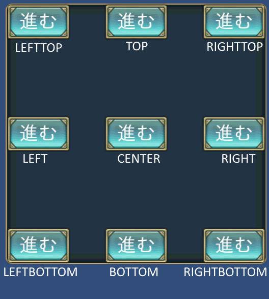
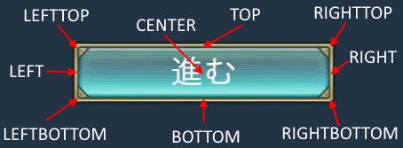

An arrangement of the control¶
specifying coordinate ratios :¶
You can calculate the position of a control from ratios of its parent’s size (often the window size).
POSITION = 0{20},50{30};X = 0 + window width * 50/100
Y = 50 + window height * 30/100
Anchor:¶
It is possible to set the position of the origin of the window for each control.
You can specify the position of the control by using the relative position from the origin.
Thus,even if the screen size is changed,you can get a flexible layout not to collapse it.
We call it the anchor in this window system.
You can select nine kind anchor as shown in the figure below.
The base position¶
You can set the center position of the control to the individual.
Setting of the center position can be set from a location of nine kind.
The relationship between the anchor and the base position¶
Depending on the anchor, the default value of the base position decide.
For example, when the anchor is set in the upper-left base position, it will be set to the upper left corner.
If you want to set the base position other than the default value, you need to explicitly set the value.
Enumerate the default value of the base position corresponding to the anchor value at below.
Anchor |
Base position |
|---|---|
ANCHOR_DEFAULT |
BASE_DEFAULT |
ANCHOR_LEFTTOP |
BASE_LEFTTOP |
ANCHOR_LEFT |
BASE_LEFT |
ANCHOR_LEFTBOTTOM |
BASE_LEFTBOTTOM |
ANCHOR_TOP |
BASE_TOP |
ANCHOR_CENTER |
BASE_CENTER |
ANCHOR_BOTTOM |
BASE_BOTTOM |
ANCHOR_RIGHTTOP |
BASE_RIGHTTOP |
ANCHOR_RIGHT |
BASE_RIGHT |
ANCHOR_RIGHTBOTTOM |
BASE_RIGHTBOTTOM |